ICTC 지휘통제절차 웹툰 · 시즌 1
8화 「폭발」
우선순위보고, 긴급탈출, 인원점검 — 위기의 몇 분
4층 내부. 공격전략으로 진입해 진압 중. 짙은 연기 속에 호스 한 줄이 어둠 쪽으로 뻗어 있다. "뭔가 이상한데요." 도경의 말이 끝난 바로 그 순간.
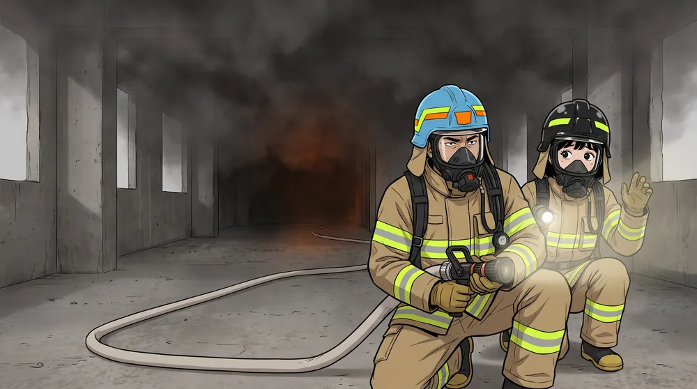
종근이 돌아본다. 무엇이, 어디서인지 되물을 틈도 없이.
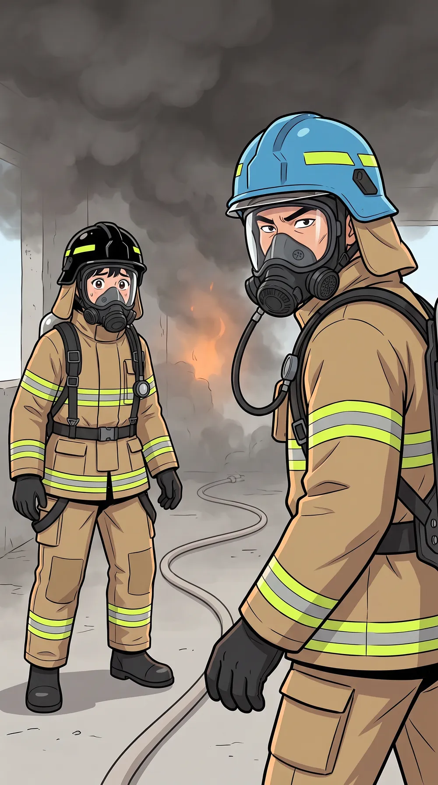
(효과음 후편집) 섬광과 충격. 4층 안쪽이 한꺼번에 불길로 뒤덮인다.
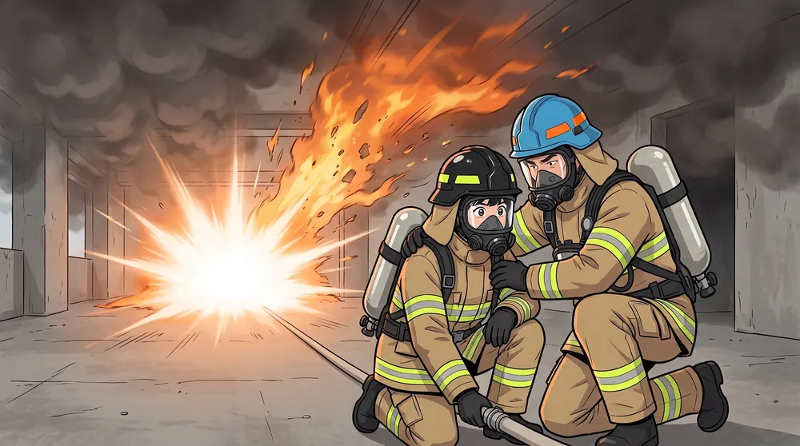
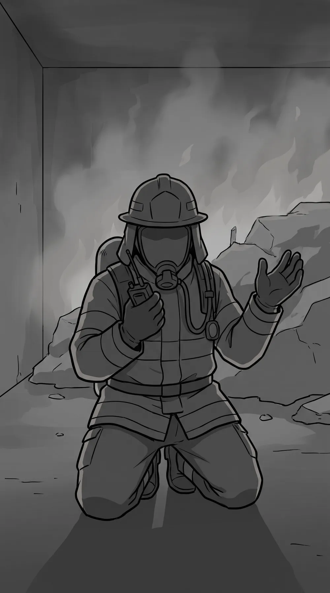
✕ 잘못된 예 — 머뭇거리는 일반 무전. 위험은 기다려 주지 않는다.
어… 지휘대장님, 여기 4층인데요… 뭔가 터진 것 같은데, 일단 좀 더 확인해 보고…
우선순위보고: 폭발·급격한 연소확대처럼 전략을 바꿔야 할 정보는 다른 교신에 끼어들어서라도 먼저.
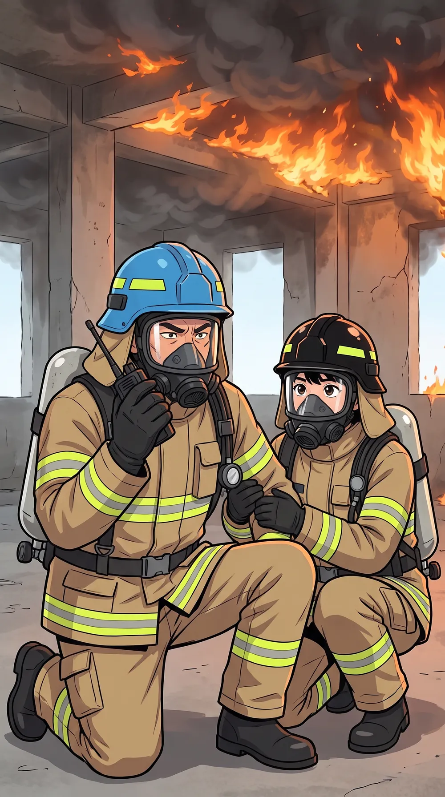
우선순위보고! 우선순위보고! 지휘대장! 여기 4층 단위지휘관! 4층 내부 폭발, 연소 급확대! 내부 대원 위험!
폭발 징후를 보면 현장지휘관은 즉시 긴급탈출을 지시하고, 바뀐 전략을 모두에게 알린다.
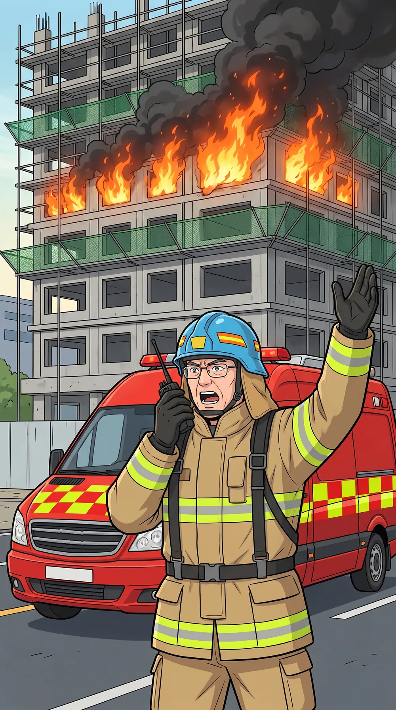
긴급탈출, 긴급탈출, 긴급탈출, 긴급탈출, 긴급탈출! 지휘대장이 일방적으로 전파한다. 현 시간부로 방어전략으로 전환, 건물 내부 전 분대는 즉시 탈출! 전 출동대 무선 침묵!
무전·방송으로 "긴급탈출" 다섯 번, 사이렌은 5초 길게, 3초 쉬고, 반복.
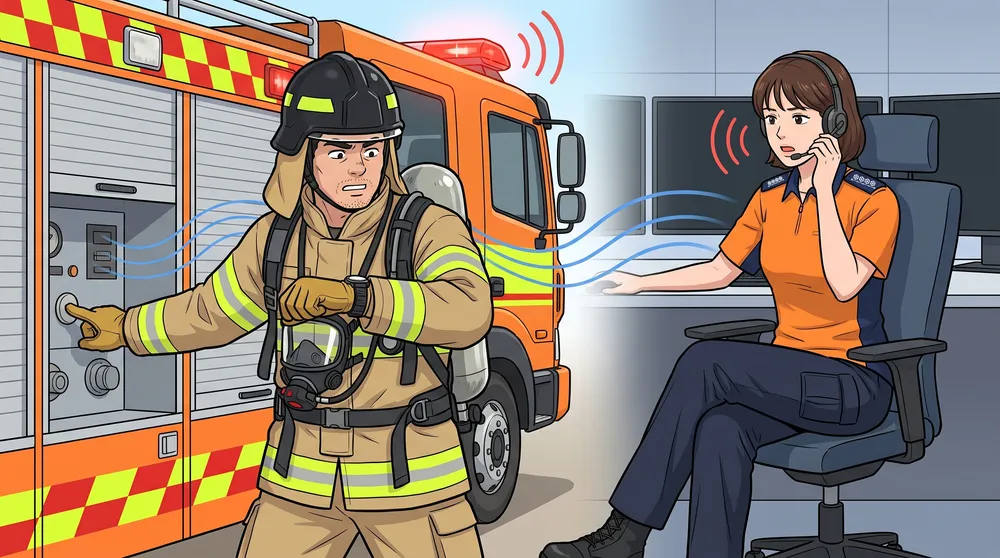
5초… 쉬고… 다시.
상황실 복명복창. 한솔아파트 공사장 4층 폭발, 긴급탈출 발령, 방어전략 전환, 무선 침묵.
호스 따라 나간다! 내 어깨 잡아!
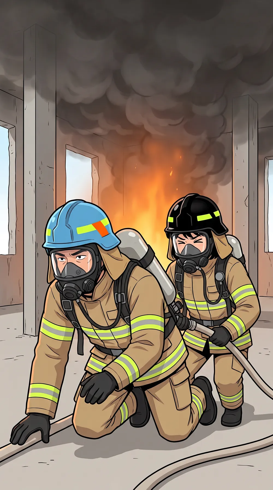
앞이 안 보여… 호스만, 호스만 놓지 말자.
1차 전파 후 2분 안에 2차 전파. 그리고 5분 안에 단위지휘관별 인원점검.
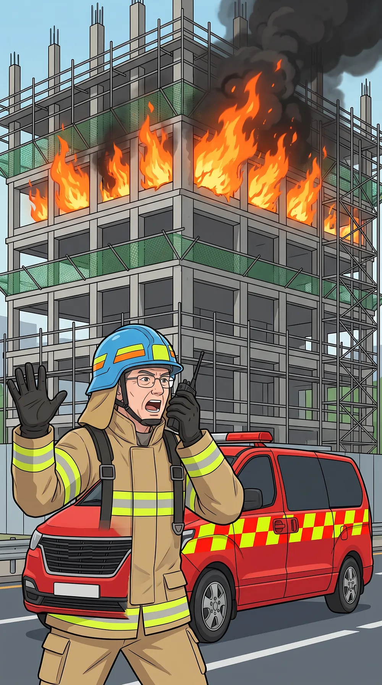
2차 전파! 긴급탈출, 긴급탈출, 긴급탈출, 긴급탈출, 긴급탈출! 각 단위지휘관은 인원점검 후 보고!
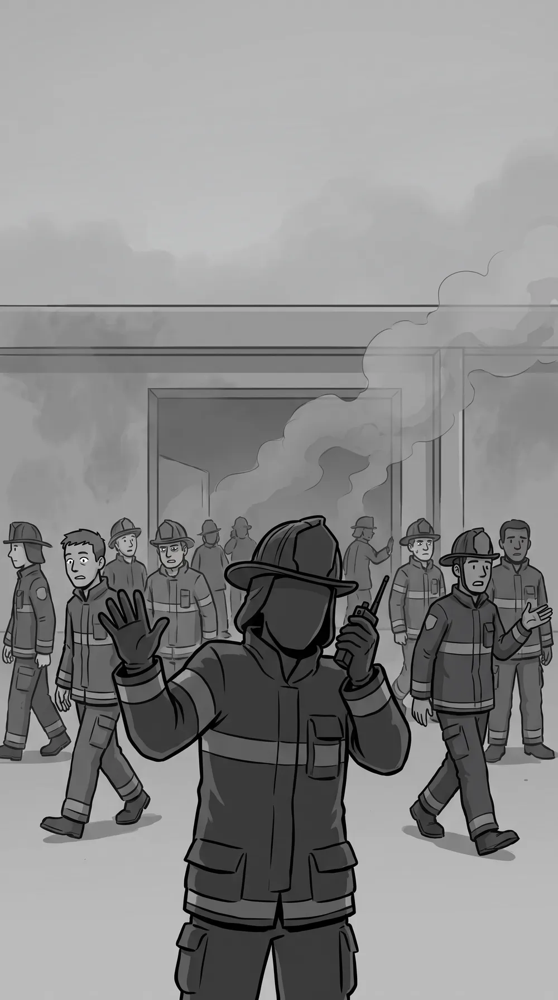
✕ 잘못된 예 — '같다'는 점검이 아니다. 누가 몇 명인지 모른다.
다들 나온 것 같습니다!
인원점검은 숫자로. 투입한 인원, 확인한 인원, 이상 유무.
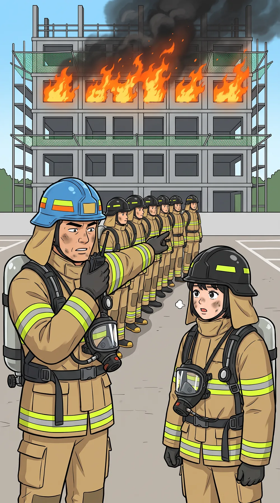
4층 단위지휘관! 진압1대·진압2대 투입 8명 중 8명 확인, 이상 없음!
세 번 불러도 답이 없다. 긴급탈출 상황이다.
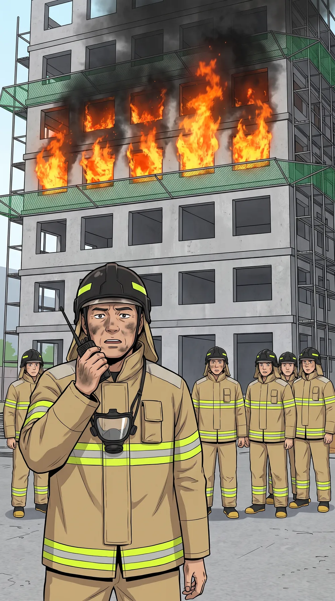
5층 단위지휘관! 진압3대·구조2대 투입 8명 중 7명 확인, 진압3대 대원 1명 미확인!
진압3대 대원, 응답하라… 진압3대 대원, 응답하라… 진압3대 대원, 응답하라!
미확인 대원이 있으면 추가 위험요소를 확인한 뒤 RIT를 보낸다.
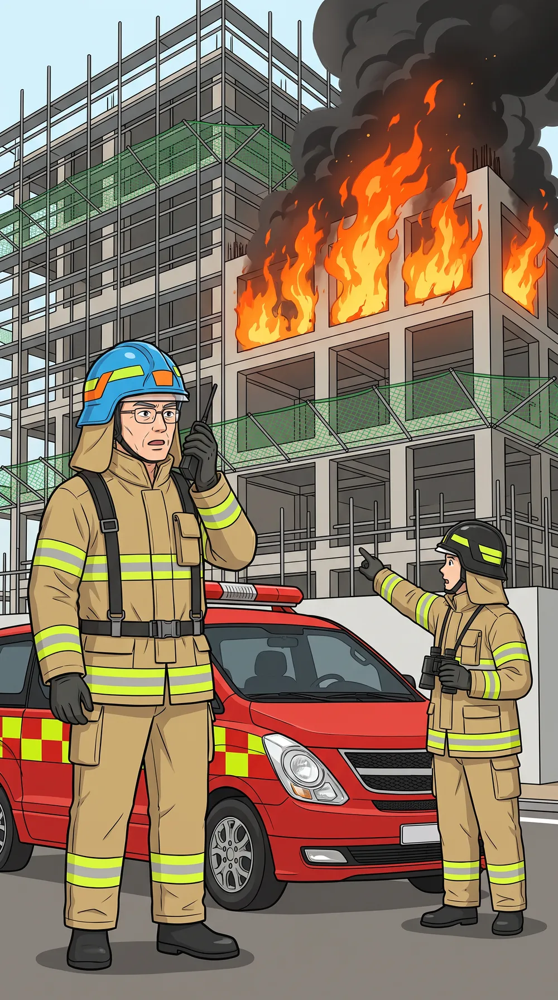
마지막 위치는?
5층 계단실, 4층으로 내려오던 중이었습니다!
계단실은 연기뿐, 붕괴 징후는 아직 없습니다!
RIT는 이 순간을 위해 다른 임무 없이 기다려 왔다. 들어갈 때는 둘 이상.
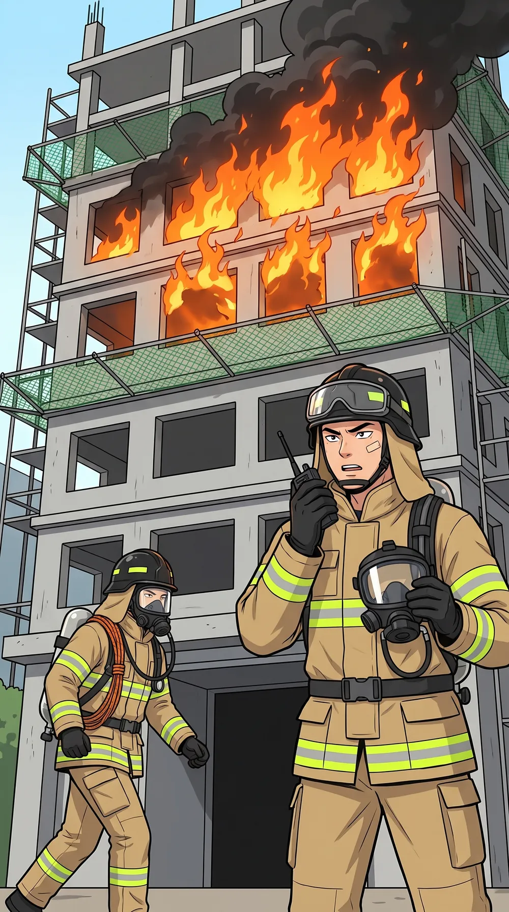
3차 전파. 진압3대 대원 1명 미확인. RIT 투입, 5층 계단실! 4층 단위지휘관은 비상탈출로 확보! 상황실, 추가 RIT는 자원대기소 진압4대로 지정.
RIT 진입!
말을 걸어 주는 것이 첫 구조다.
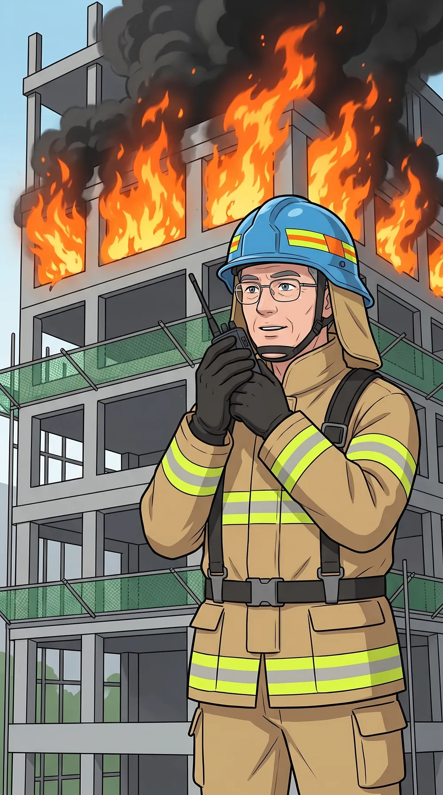
…진압3대… 4층하고 5층 사이 계단… 다리를… 못 움직이겠어요…
들린다. 침착해라. 숨 천천히 쉬고, 공기 얼마 남았나? 무전 끊지 마라. 교신 끝나면 PASS 켜라.
누가, 무엇을, 어디에, 무엇이 필요한지. 상황실은 되받아 확인한다.
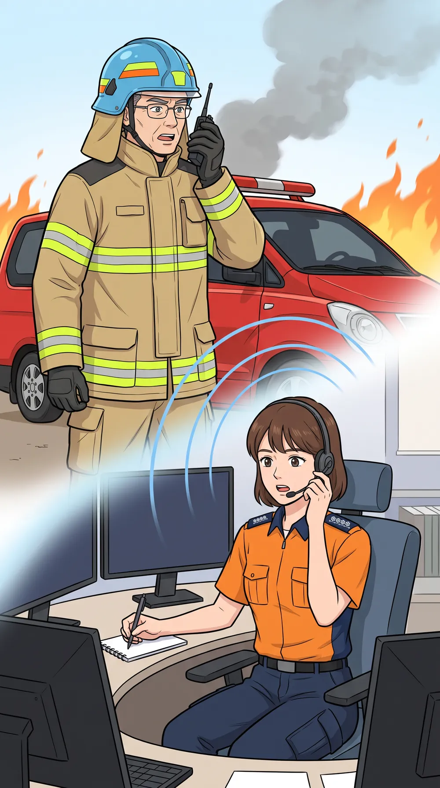
전 출동대 무선 침묵 유지! 진압3대 대원, 4·5층 사이 계단참, 다리 부상. 필요한 것은 공기와 이송. RIT 구출 중.
상황실 복명복창. 진압3대 대원 1명 4·5층 사이 계단참 다리 부상, 필요 자원 공기·이송, 무선 침묵.
대장님, 저도 같이 들어갈게요!
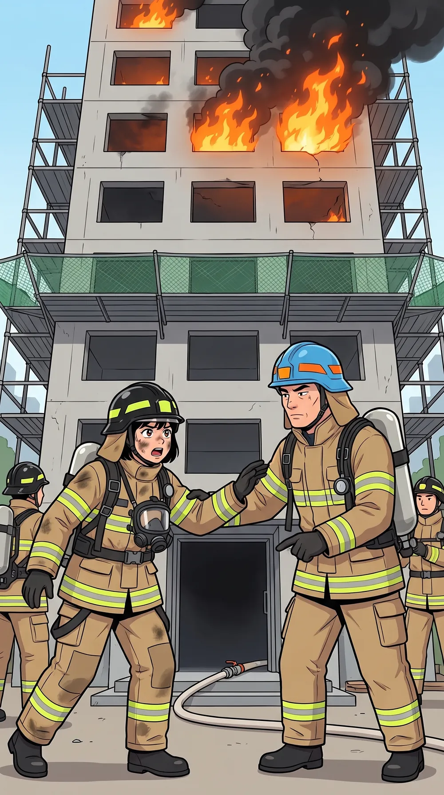
안 돼. 구출은 RIT 몫이다. 우리 일은 저 사람들이 나올 길을 지키는 거다.
PASS 경보음을 따라 찾았다. 먼저 공기, 그다음 길.
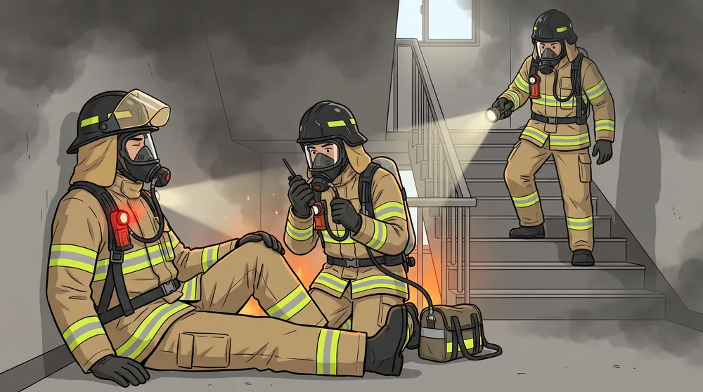
RIT, 고립 대원 발견! 4·5층 사이 계단참, 의식 있음, 왼쪽 발목 부상. 예비 공기 연결했다. 계단 따라 A면 출입구로 퇴출!
구급대는 출입구 가까이 전진배치. 구출한 대원은 곧바로 구급대에 넘긴다.
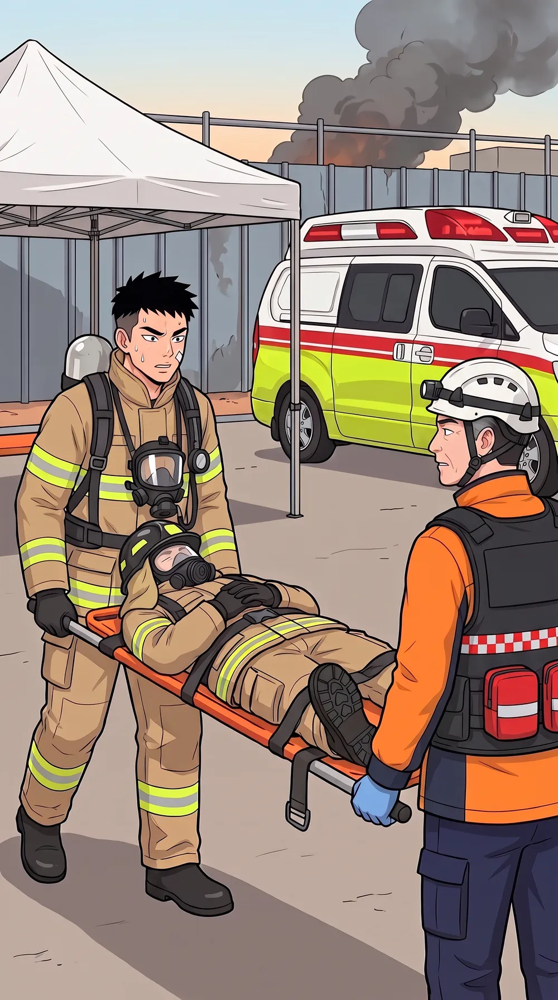
인계받습니다. 의식 명료, 호흡 괜찮고, 왼쪽 발목. 임시의료소로 옮겨!
구출이 끝나면 해제하고, 다시 평가한다. 그대로 이어가지 않는다.
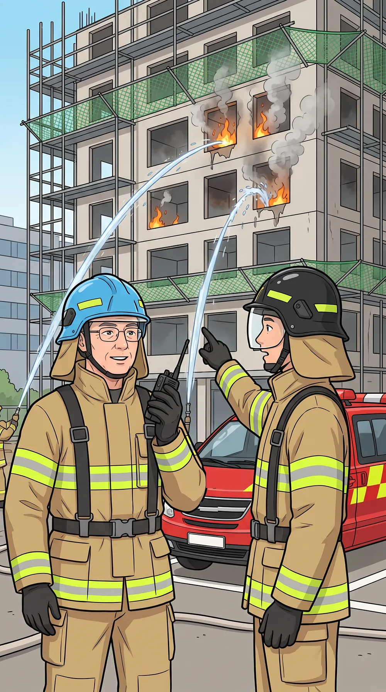
상황실, 대원 구출 완료. 비상통신 해제. RIT 구출 임무 종료.
상황실, 비상통신 해제 복명.
4층 외벽·천장 균열 없습니다. 외부 방수 뒤로 화세 줄고 있습니다.
전략은 고정이 아니다. 화세가 줄고 구조가 안전하면 다시 안으로. 바꿀 때마다 모두에게.
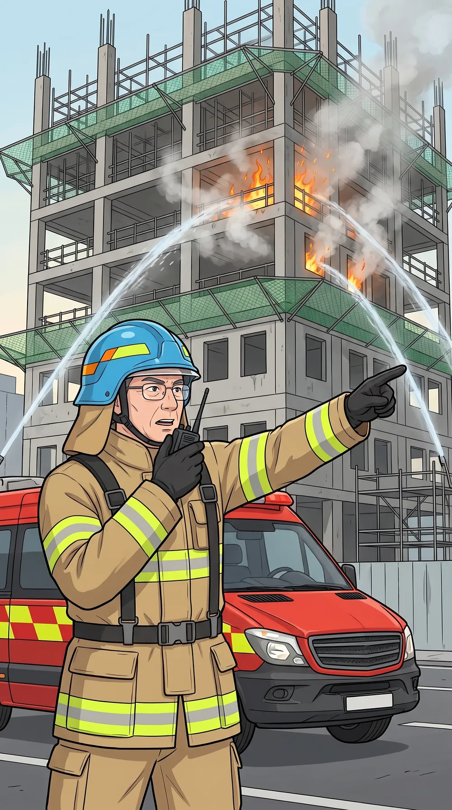
지휘대장이 전파한다. 4층 화세 감소, 붕괴 징후 없음 확인. 현 시간부로 공격전략으로 재전환! 4층 단위, 교대조로 재진입하라!
긴급탈출을 겪은 대원은 다시 들어가기 전에 몸과 마음을 먼저 살핀다.
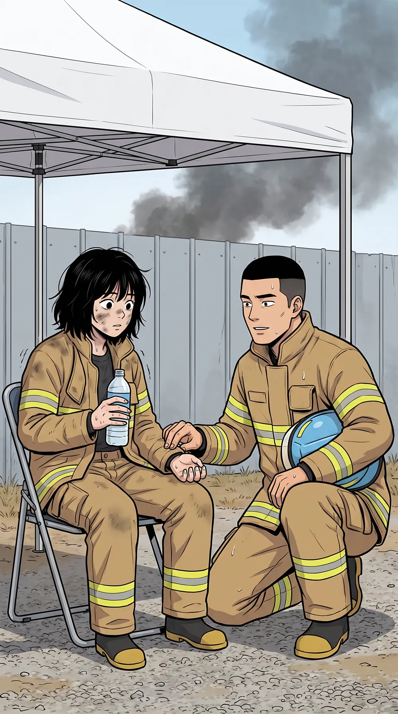
도경, 손 떨리지? 이번엔 교대조가 들어간다. 너는 회복 구역으로.
저 괜찮아요!
괜찮은지는 물 마시고, 맥박 재고 나서 보자.
불보다 먼저 센 것은, 사람이었다.
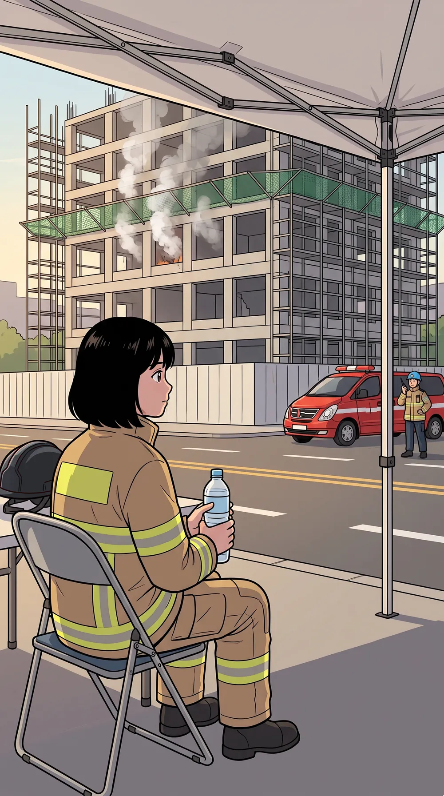
지휘대장이다. 전 대원 건물 밖 이상 유무 확인 완료. 부상 대원 1명, 임시의료소 처치 후 병원 이송 예정.
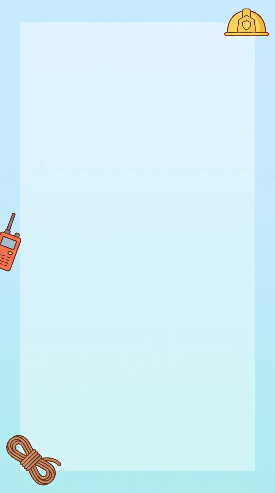
핵심 포인트
- 폭발·급격한 연소확대는 일반 무전보다 먼저 '우선순위보고'p.124 · SOP 107 1.3
- 지휘관은 즉시 긴급탈출 지시·전략 전환 전파·무선 침묵, 탈출 뒤 단위지휘관별로 인원을 숫자로 점검SSG 9 2.1.7 · SOP 106 2.3 · SOP 109 1.3
- 3회 무응답은 긴급탈출 상황 — RIT 투입, 구출 후 비상통신 해제·재평가·전략 재수립SOP 109 1.1 · 1.5.2 · 1.6
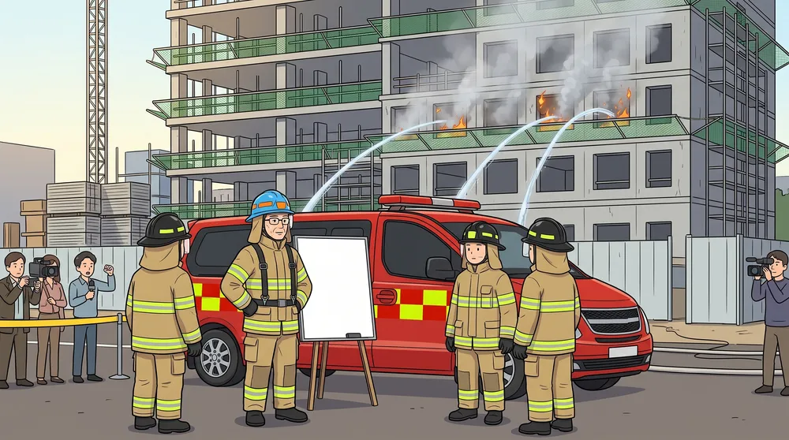
다음 화 — 「쓰고, 모으고, 알린다」. →
불길이 꺾이기 시작한 현장지휘소. 계획을 쓰고, 회의로 모으고, 브리핑으로 알린다.
불길이 꺾이기 시작한 현장지휘소. 계획을 쓰고, 회의로 모으고, 브리핑으로 알린다.
근거: SOP100-113 지휘통제절차 해설(2025.12. 개정판) · 교육용 전 12화© 2026 부산ICTC 서종근 외 5명. All rights reserved.
 ×
×